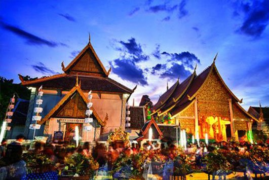
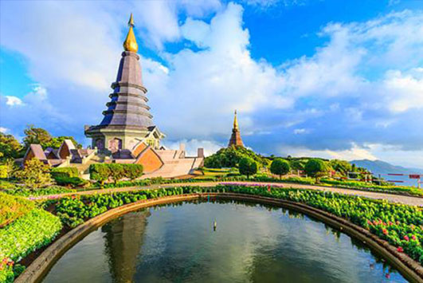
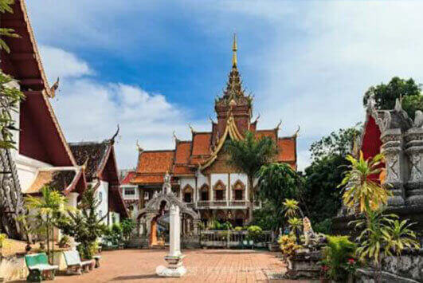
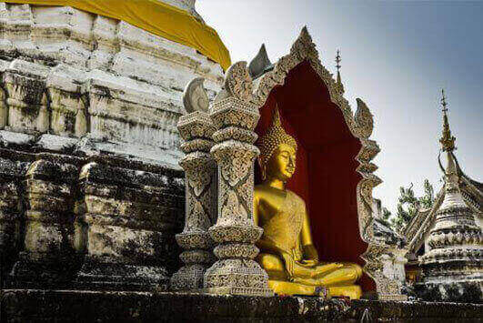
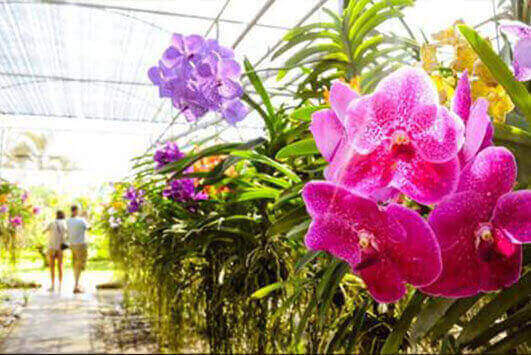
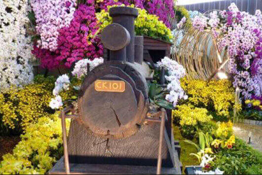
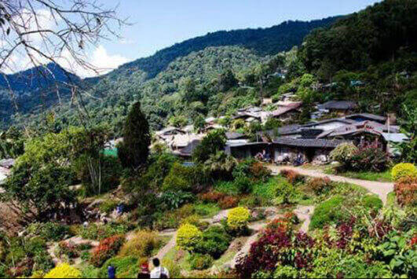

morly旅游网
清迈为泰国北部城市，位于曼谷北方海拔305米的山谷中，环境优美，气候凉爽，以玫瑰花著称，素有“泰北玫瑰”的雅称，历史悠久，文化古迹众多。清迈市内风景秀丽，遍植花草，天然环境优美，气候凉爽，是著名的避暑胜地。清迈又是泰北地区艺术及建筑物的集中地，保留有大量的文化遗迹，是寺庙佛塔之城。
清迈山清水秀景色绝美，手工艺品十分出名。清迈人大多信佛教，所以清迈城内有许多古色古香的寺庙殿堂，这些寺庙与新建的白色建筑交相辉映，造就了清迈独特的色彩。这座城市四面环山，景色旖旎，整座城市都萦绕着一种祥和安宁的气息，在清迈这座安静淡雅的城市，或许你不能在温柔的海滩上晒着日光浴，或许你不能在繁华的商场中疯狂购物，但是你可以在古城的街道慢慢行走，感受这座城市温柔的气息，你也可以在寺庙中虔诚的诉说自己的烦恼和心事，你还可以穿越丛林，感受自然的美丽风景。清迈素以“美女和玫瑰”而闻名天下，去清迈，细嗅这朵清雅的泰北玫瑰。<
清迈景点众多，因为人们大多都信佛，所以在清迈的景点中，大多数都是寺庙。比较值得一去的景点有帕烘寺、布帕壤寺、兰花园、柴迪隆寺、古道寺、南邦府、素贴山双龙寺、普拉辛寺、苗族村等。帕烘寺位于清迈古城的西南角，如果你从机场徒步到古城的话，遇到的第一个寺庙就是帕烘寺，帕烘寺是一座十分美丽的僧院，院内角落里随意开放着石蒜花和三角梅。寺内主要景点是屋后少见的的圆锥型7 层塔，塔上有52个佛龛，里面坐着冥想佛，基层还有一圈陶瓷装饰。布帕壤寺位于圣方寺的对面，寺中最吸引人的是年代久远的小木造僧院，有超过300年的历史，风檐上及廊柱上的细致灰泥装饰依旧叫人心动，有点倾斜的前门，让人感叹时光易逝。寺内新建的僧院色彩艳丽，金碧辉煌，与院内古老富有年代的僧院相对应，给人一种强烈的视觉冲击，但却有不觉得违和，因为世间就是如此。还有一个独特的景点，大家也可以去看看-兰花园，兰花园位于距离市中心大概3公里的帖卡撒堤路上，这里气候凉爽宜人，空气清新自然。每到花开，那真是姹紫嫣红，香气扑鼻，繁花似锦。兰花虽然不是泰国的国花，但因兰花高雅的花品而获得了“不是国花却胜似国花”的尊贵地位。养殖场还将兰花幼苗培育在真空瓶中，以便游客携带，另外也有真花拿来镀金、镀银、上胶做成的别针，特别生动，也是送礼的好选择。其它景点我就不一一讲述，亲身去感受的景色总是最好的。
清迈最佳旅游时间
去清迈旅游的黄金时间是每年11月到次年4月，4月有盛大的泼水节。不过，在5月到10月的淡季，虽然经常下雨，但是食宿更加便宜，房间、车票也不会紧张。清迈有许多活动、节假日，还有各种集市、文化中心、娱乐项目，游客一年到头都能很尽兴。
温馨提示
1、不勾肩搭背，不从背后惊吓别人。；
2、进入寺庙要脱鞋，服装应整齐、端庄，最好不要穿短裤。；
3、打招呼时要双手合掌，不可以用手指人或物。；
4、泰国禁赌，即使在酒店房间内也不可玩牌或打麻将。
5、泰国时间比格林威治标准时间早7个小时，比北京时间晚1小时。旅客从中国境内上飞机后，勿忘将手表拨慢1小时。格林威治时间为12时，泰国时间为19时，北京时间为20时。
6、泰国的电源插孔是二孔的，220V，50Hz。国内的两相插头都可以直接使用，而三相插头则需要用转换器。泰国的三相插头和中国的不同（中间那根是圆的），所以，最好带一个三相转二相的插头转换装置
帕烘寺
帕烘寺是一座十分美丽的僧院，院内角落里随意开放着石蒜花和三角梅。。
 布帕壤寺
布帕壤寺位于圣方寺的对面，寺中最吸引人的是年代久远的小木造僧院，有超过300年的历史
 兰花园
兰花园位于距离市中心大概3公里的帖卡撒堤路上，这里气候凉爽宜人，空气清新自然。
 苗族村
苗族村，位于泰国培山附近，距离蒲屏宫不远处，由于村庄位于山上，并且上山之路非常崎岖难行。作为泰国现存的唯一六种山地民族之一，当地的村民仍然保留少数民族的穿衣打扮的风格，苗人以种田为生，生活十分朴实简单，让前来的游客都能感受到这种朴实无华的生活中的别样风味。
内容整理至网络，如有侵权，请联系我们！1255394075@qq.com